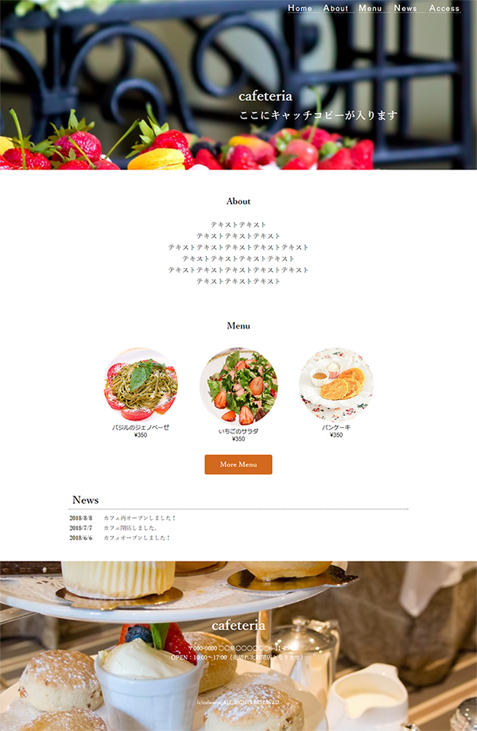

架空の喫茶店サイト
制作時期：９月 制作期間:約２日間
ターゲット
20代の女性
こだわり
ヘッダとフッタの空間を広く取り、画像を大きく見せています。
これによってファーストビューにインパクトを与えるとともに、
販売メニューやカフェ全体の雰囲気を強く印象付ける効果を狙っています。
白を基調としたシンプルな構成することでおしゃれなイメージを演出しました。
制作範囲
コーディング、デザイン
使用ツール
HTML,CSS,Photoshop